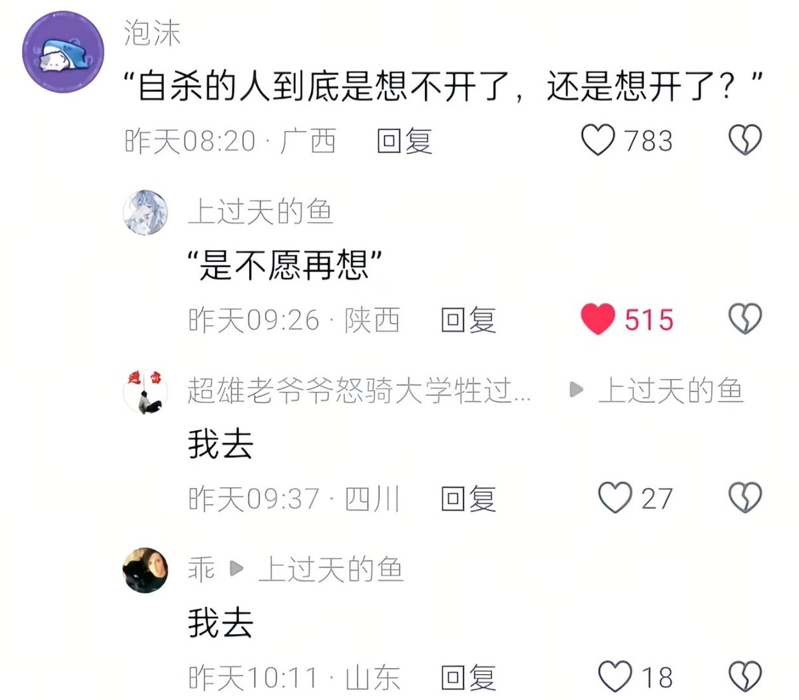

雪秋小可爱
@XUEQIUxka
人生会经历三次死亡
第一次是生物学意义上的死亡： 当你的心脏停止跳动，呼吸消散，医生宣告你离开了这个世界。这是我们肉体与这个喧嚣尘世的终结
第二次是社会学意义上的死亡： 当你被下葬，在葬礼上，所有的亲朋好友聚在一起。那一天，你在社会关系网络中的位置被注销了，人们开始在心中为你保留一个位置，你从现实的互动中退场
第三次是终极的消失： 这是最寂静、也最令人心碎的告别。当世界上最后一个记得你、念着你名字的人也离开了，或者当最后一段关于你的记忆从这世上彻底抹去时，你才真正意义上地、彻彻底底地消失了
